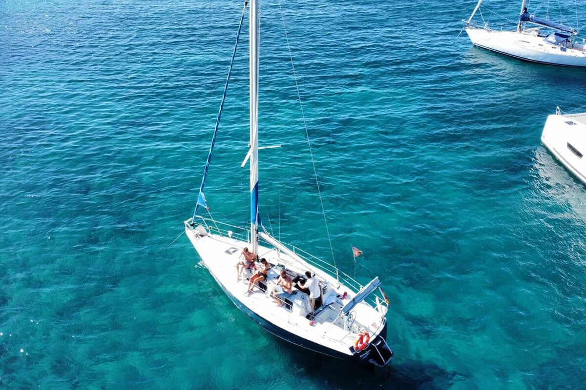
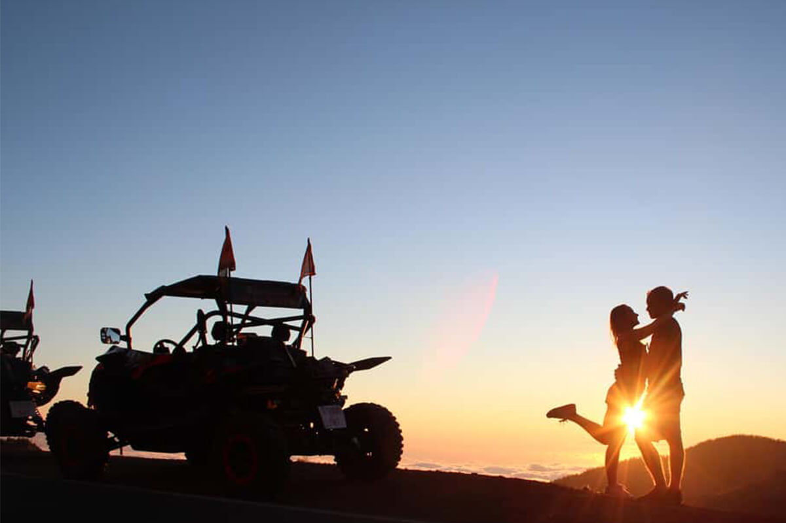
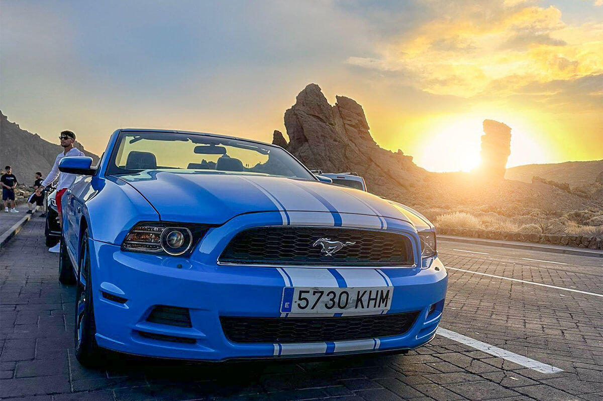
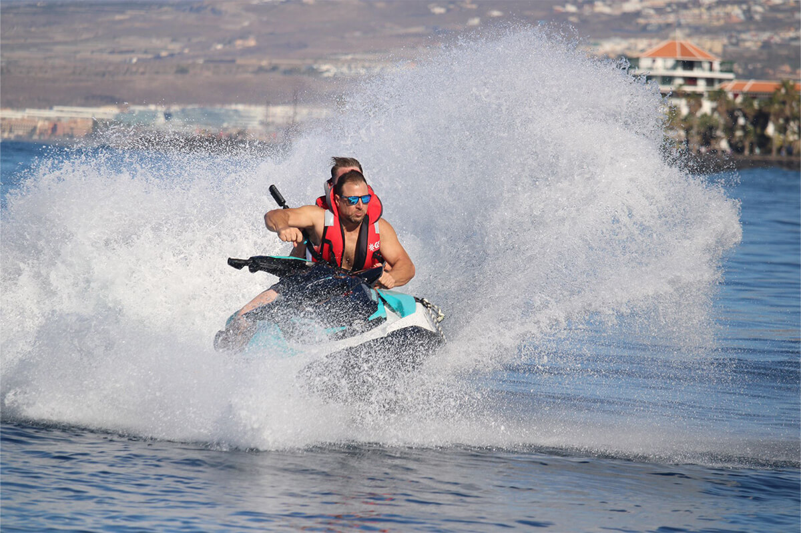
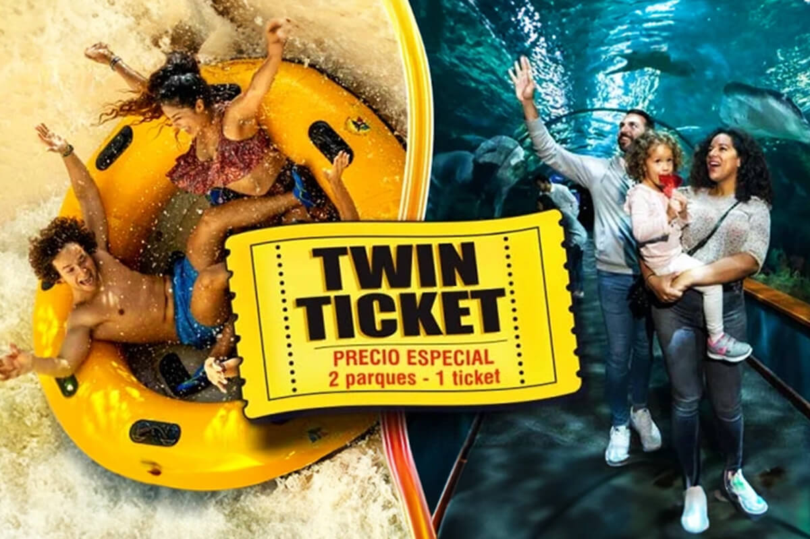
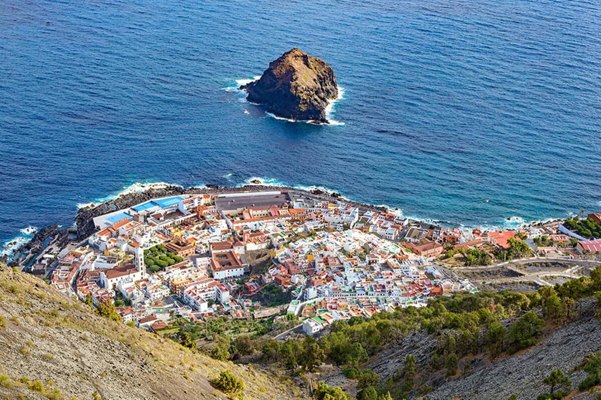
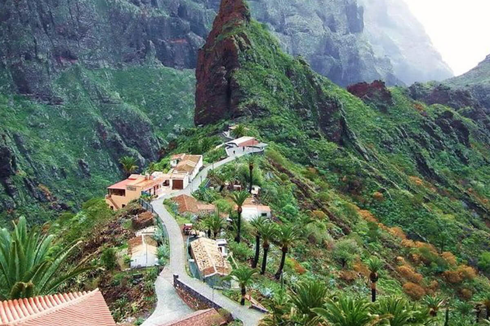
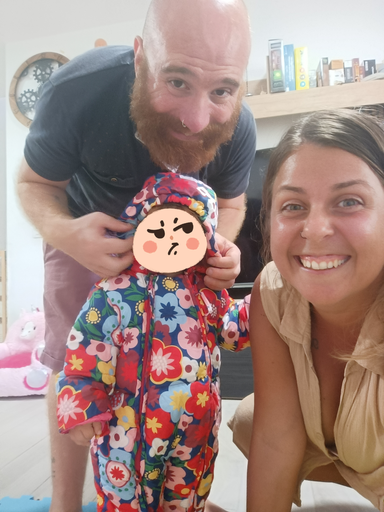

Tutte le info del tuo tour,
in un posto solo
Isla raccoglie in un unico posto tutte le informazioni della tua escursione: orario, punto d'incontro, cosa portare. Niente più email o screenshot da cercare.
Tre passi, nessun pensiero
-
01
Inserisci il codice
Quello ricevuto al momento della prenotazione.
-
02
Vedi subito i dettagli
Orario, punto d'incontro, durata e cosa portare.
-
03
Parti tranquillo
Tutto quello che ti serve, anche offline.
Categorie
-

Mare e barche -

Teide e natura - Stelle e astronomia
-

Avventura e motori -

Sport acquatici -

Parchi e spettacoli -

Tour privati

Dove non arrivano i pullman
Cale di sabbia nera, piscine naturali e punti panoramici che i pullman turistici non raggiungono. Fanno parte di Tenerife tanto quanto le grandi attrazioni.

Isolani, per scelta
Isla nasce dalla voglia di rendere più semplice la vacanza a Tenerife: un unico posto dove trovare subito le informazioni della propria escursione, senza perdersi tra email, PDF e messaggi.
Il nostro obiettivo è uno solo: farti godere l'isola, senza pensieri organizzativi.
Domande frequenti
Come funziona Isla?
Inserisci il codice della tua prenotazione nel campo di ricerca in home. Isla ti mostra subito orario, punto d'incontro, durata e cosa portare per la tua escursione.
Dove trovo il codice della mia prenotazione?
È nell'email o nel messaggio di conferma che hai ricevuto al momento della prenotazione, di solito indicato come "booking code", "ticket number" o "reference code".
Cosa faccio se il codice non viene trovato?
Controlla di averlo copiato correttamente. Se il problema continua, verifica di aver ricevuto la conferma della prenotazione dall'operatore del tour.
Funziona anche senza connessione?
Sì. Isla è un'app installabile: una volta aperta la prima volta, le informazioni restano disponibili anche offline, utile quando sei in giro per l'isola.
Il tuo codice ti aspetta qui sopra
Torna alla ricerca e inserisci il codice della tua prenotazione per vedere subito i dettagli del tour.
Cerca il mio codice